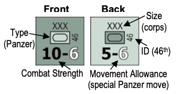
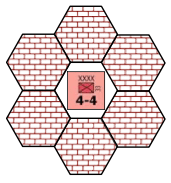
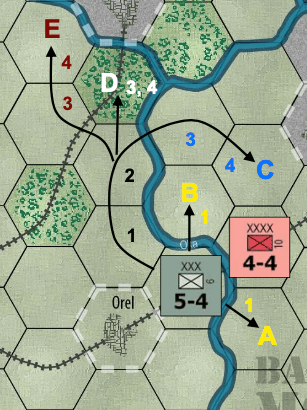
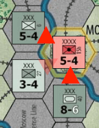
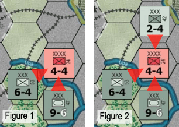

New gaming terms, when they are initially defined, appear in dark red lettering for quick referencing.
The instructions for this game are organized into major "Rules" sections as shown in large green CAPS font and represented by the number to the left of the decimal point (e.g., rule 4.0 is the fourth rule). These rules generally explain the game's components, procedures for play, the game's core systems and mechanics, how to set it up, and how to win.
With each Rule, there can be "Cases" that further explain a rule's general concept or basic procedure. Cases might also restrict the application of a rule by denoting exceptions to it. Cases (and Subcases) are an extension of a Rule shown in the way that they are numbered. For example, Rule 4.1 is the first Case of the fourth Rule; and Rule 4.1.2 is the second Subcase of the first Case of the fourth Rule.
Important information is in red text.
References to examples of a Rule or Case are in blue text and this font.
Text in shaded boxes, like this, provides the voice of the game's designer, who is addressing you to explain an idea or concept that is not, itself, a Rule or a Case.
Operation Typhoon was the code name for the German Army's final lunge to capture Moscow in late 1941 and is the subject of Battle for Moscow. This offensive was intended to break the Russian Army and end its resistance to German conquest. If Operation Typhoon succeeded, it would mean the collapse of Russian morale (or so the Germans believed). If it failed, it would (and did) leave the exhausted Germans open to a Russian counteroffensive that would push them forever beyond reach of Moscow.
Battle for Moscow is played on a map of the former Soviet Union where the battle was fought. It uses playing pieces that represent the actual military units that participated in this campaign. Each player represents a General commanding an Army Group of troops (for the Germans) or a Front of Russian Armies. The individual German ground units represent corps (from the Latin word "corpus," meaning body) of approximately 25,000 soldiers and what was left of their equipment after the long drive across western Russia in the summer of 1941. The Russian ground units are armies of approximately 40,000 men each.
Battle for Moscow is a two-player game: One player assumes the role of the Axis (Germany) and the other player assumes the role of Russia (the Soviet Union). Each player moves his units and executes attacks on enemy units in turn, attempting to fulfill the game's Victory Conditions.
To move from one space (called a "hex" for its shape) to another, each unit expends a portion of its Movement Allowance. Combat is resolved through Battles by comparing the total Strength Points of adjacent opposing units and expressing the comparison as a simplified probability ratio ("odds"). A die is rolled, and the outcome indicated on the Combat Results Table (CRT) is then applied to the units involved.
[3.1] The Game Map: The map portrays the area to the west and south of Moscow where the German army made their fateful dash to capture the Russian capital in late 1941. A hexagonal grid is superimposed on the terrain features on the map. These hexagonal spaces (we call them "hexes" for short) define units' positions just like the squares of a chessboard. The map also shows important terrain such as forests, cities, fortifications, rivers, and railroads.
Explanations of the terrain features are found on the Terrain Effects Chart (TEC).
[3.2] Game Charts & Tables: Various game aids are provided for the players in order to simplify and illustrate certain game functions. These are the Combat Results Table (CRT), the Terrain Effects Chart (TEC), and the Turn Record Track. They are explained where presented in the appropriate rules section.
[3.3] The Playing Pieces: The playing pieces represent actual military units that fought in this campaign. The numbers and symbols on the playing pieces represent the strength and type of unit simulated by the particular playing piece. The playing pieces shall henceforth be referred to as "units."
The German Player controls the German (field gray / light gray) units. The Russian Player controls the other (red / pink) units.
Infantry: composed primarily of infantry divisions
Shock: infantry divisions with massive artillery reserves
Panzer (Tank, Armor): composed of primarily armored divisions
XXX: Corps
XXXX: Army
Unit Type is either infantry (foot soldiers) or armored (German "panzer" or Russian "tank").
Combat Strength measures a unit's value in battle as expressed in Strength Points; higher numbers are stronger.
Movement Allowance determines how far the unit can move as expressed in Movement Points.
Unit Size and ID (identification) are included purely for historical interest and have no effect on game play.
All units have two sides: A full-strength (front) side and a reduced-strength (back) side (in a different shade of color for easy recognition during play) that is half the Combat Strength of its full-strength side (rounded down). Losses in combat can reduce a full-strength unit to a reduced-strength unit. Replacements can turn a reduced-strength unit into a full-strength unit.
The six-sided die is used only with the Combat Results Table to determine the result of attacks. The die has nothing to do with movement of units.
Game Length: There are seven Game Turns in the Battle for Moscow.
Time Scale: Each Game Turn represents approximately one-to-two weeks of real time, depending on the weather. For example, turns 3 and 4 each represent approximately two weeks because the mud slows down the battle.
How the Turns Work: Each turn is divided into nine parts or "Phases" that are performed in the exact order listed below. All actions in one phase must be finished before the next phase can begin.
The first four phases are the German "Player Turn"; the next four are the Russian Player Turn.
German Player Turn
Russian Player Turn
Administrative
The Germans win if they control Moscow at the end of Game Turn 7. The Russians win if they control Moscow and any one other city. Any other result (i.e., the Germans control every city but Moscow) is a draw. "Control" of a hex (e.g., Moscow) is defined in Rule 10.0.
1. Place the Game Turn marker on the 1 box of the Game Turn Track and the Russian 1st Shock Army on the 4 box (when it arrives as a Reinforcement, see 11.0).
2. Take the remaining sixteen Russian armies and flip them to their reduced-strength side. Place one of these reduced-strength Russian units on each hex marked with a red star. Since all Russian units are the same strength, it doesn't matter which unit goes where. There should be two Russian units left.
3. The German Player then sets up one full-strength German unit on each hex containing a black cross. The exact setup is very important as it determines what the Germans are capable of doing on Game Turn 1.
4. The German Player commences the first Game Turn starting with his Combat Phase*. The game then follows the Sequence of Play (as per Section 4.0) until the last Game Turn is completed.
*Since all German units begin at full-strength and are physically placed in their starting positions, the German Player receives neither Replacements nor Special Movement on Game Turn 1.
Each unit has a Zone of Control ("ZOC") that consists of the six hexes surrounding it (see diagram), including hexes occupied by enemy units. Enemy Zones of Control have important effects on movement, combat, and replacements.
[7.1] Movement Effect: A unit entering an enemy Zone of Control ("EZOC") must immediately end its movement for that Movement Phase (as per Case 8.3). Units may freely leave EZOCs and thus can move directly from one hex in an EZOC directly to another hex in an EZOC, but must then stop.
[7.2] Combat Effect: Units cannot end their retreat in an EZOC; they are eliminated if they do. (See Case 9.3)
[7.3] Effect on Replacements: Zones of Control also affect how a path can be traced to allow for Replacements. (See Case 10.3)
Units are moved during the Movement Phases (i.e., Phases 2, 4, 6, and 8) of each Game Turn. Movement works essentially the same way in each Phase.
Each unit has a Movement Allowance that represents the distance in hexes it can move in each eligible Movement Phase, subject to Weather and Terrain Effects. (See the Player Aid Sheet for these tables)
In a Movement Phase, the player moves any or all of his units that qualify (i.e., only panzers in the Panzer Movement Phase, and only Russian units on rail lines in the Rail Movement Phase). Units move one at a time, from hex to hex, in any direction or combination of directions.
[8.1] Russian Rail Movement: In the Rail Movement Phase, any (and only) Russian units that start the phase on a rail line can spend their Movement Allowance and move in accordance with the rest of this rule with this exception: They can only move along hexes that are connected by a rail line and do so at a cost of 1 Movement Point per hex regardless of terrain (e.g., a forest hex counts as only one hex for movement during Russian Rail Movement).
[8.2] Restrictions: The following restrictions apply:
[8.2.1] Enemy Units: A unit can never enter a hex containing an enemy unit.
[8.2.2] Stacking: A unit can enter a hex containing a friendly unit, but there can only be one unit in a hex at the end of each Phase.
[8.3] Zone of Control: A unit entering an Enemy Zone of Control must immediately end its movement for that Movement Phase. There is no penalty or effect for leaving an Enemy Zone of Control.
Movement Example: Here are some different ways that the German 6th Corps could move. The numbers in the illustration show how many Movement Points it has spent from its Movement Allowance of four (4), the second number along each unit's bottom, to enter that hex.
The German 6th Corps can move to hex A or B, but must stop immediately because it has entered the Enemy Zone of Control exerted by the Russian 10th Army (Case 8.3).
The German 6th Corps can also move to hex C and stop because it has used up its entire Movement Allowance for that Movement Phase (and it must also stop because it has entered an Enemy Zone of Control).
In moving to hex D or E, the German 6th Corps has also spent its entire Movement Allowance for that turn. Note that hex D is a forest hex, and therefore costs two Movement Points to enter (as per the Terrain Effects Chart on the Player Aid Sheet).
Also note that there is no additional cost in Movement Points to cross the river hexsides, as in some other wargames. In Battle for Moscow, river hexsides only affect combat, not movement.
In each Combat Phase (Phases 3 and 7), all friendly units may attack adjacent enemy units. Attacking is completely voluntary; units are never compelled to attack.
A "Battle" is an attack on one enemy unit by any or all of the attacking player's units that are adjacent to that Battle Hex and the die being cast to determine its outcome.
First, the attacking player (or "attacker", i.e. the German Player during the German Combat Phase, and the Russian during his Combat Phase) announces all his Battles; that is, he declares in advance which enemy units he will attack and which of his own ("friendly") units will attack them.
Battles are resolved one at a time in any order the attacking player desires. For each Battle, the following sequence is followed:
1. Total the Combat Strengths of all the attacking units in that Battle.
2. Divide this total by the Combat Strength of the defending unit, dropping any remainder (or "fractions"), to get one of the odds levels provided on the Combat Results Table.
For Example: An attacker's 16 total Strength Points engage in a Battle against a defending unit with a strength of 4. The odds are 4:1 (four to one). Note that 15 attacking 4 is only 3:1.
3. Determine if the combat effects of terrain have lowered the odds column.
4. Roll the die and consult the Combat Results Table; cross-index the row of the number rolled with the odds column to determine the result.
5. Apply the combat result immediately.
6. Advance after combat: If the defending unit is no longer in its hex (i.e., it has been eliminated or forced to retreat), one attacking unit may immediately move into the defender's just-vacated hex.
7. Conduct the next pending Battle, if any.
The Combat Phase is over when all previously announced Battles are resolved.
[9.1] Long Odds: After Step 2, above, if the odds are above 6:1, reduce them to 6:1.
After Step 3, above, if the odds are below 1:1, that attack has no effect on either side.
[9.2] Terrain Effects on Combat: As shown on the Terrain Effects Chart, if the defending unit is in a forest, major city (i.e., Moscow or Tula), or is a Russian unit in a fortification hex, reduce the odds by one level (e.g., a 4:1 attack becomes a 3:1, a 3:1 attack becomes 2:1, and so on).
If all of the attacking units in a Battle are across a river from the defending unit, reduce the odds by one level.
All of these terrain effects are cumulative!
For Example: The Germans are attacking Moscow as illustrated.
During Step 1, the combined strength for the German attackers is computed as 16.
In Step 2, this value is divided by the defender's strength of 5; 16 ÷ 5 reduces to 3:1 odds.
In Step 3, terrain effects are checked, and the odds column is reduced twice: once for the defender being in Moscow, and again because all of the attacking units are across river hexsides. Thus, the new (reduced) odds column for this battle is 1:1.
Example #2: The Germans attack a Russian unit in Tula; there are two shifts to the left: one for the major city and one for the fortification hex.
[9.3] Combat Results Explanation: These outcomes can occur during Step 4 of a Battle as shown on the Combat Results Table:
NE (No Effect): Nothing happens.
DR (Defender Retreat): The defending unit is retreated (i.e., moved) two hexes by the attacking player as follows:
Or Else: If there is no retreat path which satisfies all of these conditions, the unit is eliminated instead.
Stand Fast: When defending in a major city hex (only), the Defender may convert a DR result to a single step loss and no retreat.
DRL (Defender Retreat and Loss): The defending unit must first take a step loss; then, if it survives, it must retreat as described for a DR result (above).
DE (Defender Eliminated): The defending unit is entirely eliminated whether it is currently at full-strength or half-strength.
EX (Exchange): First, the defending unit takes a step loss as described in a DRL.
Then the attacking player must lose at least the same amount of Strength Points from among the attacking units at that Battle.
Finally, if the defending unit survived, it must retreat as per a DR result.
AL (Attacker Loss): One attacking unit (of the attacker's choice) takes a step loss, as described in the DRL result. It does not retreat, however. No attacking units ever retreat in Battle for Moscow.
Combat Examples: Here (below) you see two different German attacks on a Russian unit. In Figure 1, the odds begin at 15 to 4, or 3:1. They are reduced one level for the river and another one for the defending unit's fortifications, for final combat odds of 1:1.
The attack in Figure 2 is similar, except for the addition of the 2-strength German 42nd infantry corps - but that makes a big difference! The odds are now 17 to 4, or 4:1. These odds are still reduced one level for fortifications, but no longer for the river (since all of the attackers are no longer across river hexsides), thus making the final odds 3:1. In addition, the reduced Russian unit would be eliminated if forced to retreat since it is surrounded by Enemy units and their ZOCs.
Both players receive replacements on their respective Player Turns (i.e., during Phases 1 and 5). The number of replacement steps received each turn is listed on the Game Turn Record Track.
Each replacement step allows that player to:
1. Place a new half-strength unit on the map (using one that was previously eliminated or, for the Russians, one that was not set up on the map at the start of the game).
- OR -
2. Flip a half-strength unit that is currently on the map over to its full-strength side.
"Friendly Controlled" Defined: Friendly controlled means that your units were the last ones to have entered that city.
All cities are owned by the Russians at the beginning of the game except for those that start occupied by German units.
"In Communication" Defined: In communication, for the Russians, means being able to trace a path (of any length) from the hex in question to the northeast, east, or southeast (red border) edges of the map. Excluding the origin hex, this path cannot enter a hex containing an enemy unit or an Enemy Zone of Control.
Note that, unlike in some other wargames, friendly units do not negate the effects of enemy Zones of Control for any reason.
[10.1] One Step at a Time: You can't use two replacements during the same Player Turn to create a new full-strength unit.
Creating a new full-strength unit from one off the map would take two turns of replacements (and two total replacement steps; one received on each of those turns).
[10.2] Where Russian Replacements Appear: Newly placed Russian units (i.e. those being brought in from off the map) appear by being placed along the northeast, east, and southeast edge of the map, along the red border, in any empty hex not in an enemy Zone of Control - OR - in any empty, friendly controlled city that is in communication with the red-bordered east, northeast, or southeast edges (at most, one per city; no "stacking").
[10.3] Where German Replacements Appear: Replacements and communications work similarly for the Germans, except that they use and trace to the west (black border) edge of the map and Moscow has no special properties.
[10.4] Use 'Em or Lose 'Em: If a replacement step is not used, it cannot be saved for later turns. It is permanently lost.
Only the Russians receive a reinforcement unit. It sets up as indicated in the Setup Rule (6.0 #1) on the Game Turn Track.
This unit is placed on its full-strength side in any hex along the northeast, east, or southeast (red-bordered) map edge that is not occupied by another unit, nor in an Enemy ZOC.
Turns 3 and 4 are "mud" turns (others are "clear" and have no effect). On mud turns, the following special mud rules apply:
[12.1] Mud Effect on Movement: All movement, except Russian Rail Movement, is reduced to one hex per Phase.
[12.2] Mud Effect on Combat: The Combat Strengths of Panzer and Tank units are totaled and then halved when attacking (only, not when defending). Retain fractions when halving (e.g., half of 9 is 4.5). The Strength of Infantry units is unaffected.
For Example: In the previous Figure 2, if it were a mud turn, the three German units would be reduced to a total Combat Strength of 12.5 (i.e., losing 4.5 from the Panzer). That would make the odds 3:1 before adjusting for terrain effects.
Note that if an Exchange combat result occurs on a mud turn, the attacker's losses are based on the units' printed strengths, not their halved values for the mud.
If a handicap is needed for players of unequal experience, change the following:
The original edition of Battle for Moscow was designed in 1986 by Frank Chadwick; he proposed the basic game idea, researched the information, and drafted the game rules. The game was developed by John Harshman and John Astell; they tested, polished, and edited the rules into their final form. Playtesting was performed by the staff of Game Designers' Workshop and Diverse Talents, Incorporated; they played the game and pointed out flaws and problems that needed to be fixed. Barbie Pratt was art director for the original edition of the game; she organized the components into a final product.
The revised (2nd Edition) Victory Point Games version was created in 2009 by Alan Emrich, who was also president of Diverse Talents, Incorporated, back in 1986 and has a long history with this game. Alan did the new graphics and rules presentation for the VPG edition of the game and it was further developed by Lance McMillan and playtested and/or proofread by Bill Barrett, Richard Carley, Terence Co, Vince DeNardo, Stefan Anton Federsel and the Bavarian Raiders, Don Johnson, John Leggat, Jon Matthews, Kim Meints and Gary Sonnenberg.
© 1986 Frank Chadwick and 2009 Victory Point Games